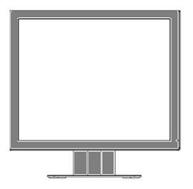
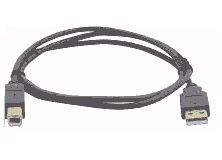
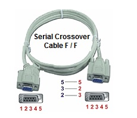
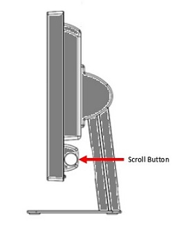
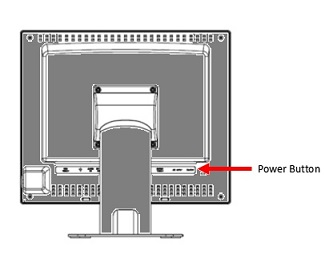
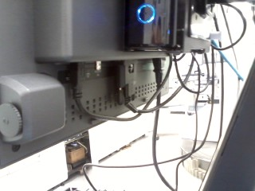

Touchscreen Monitor Operating Principles
Purpose
This procedure details the operating principles for the touch screen monitor.
Overview of Monitor

- Flat touch screen.
- Separate power cord.
- Separate video signal cable.
- Separate touch screen cable.
Touchscreen
The new style touch screen monitor has touch screen USB cable for PC that supports USB devices. The old style touch screen monitor has touch screen serial cable for PC that has serial ports. With the touchscreen cable connected between the monitor and the PC, the touchscreen is active. If the cable is not attached, the touchscreen cannot function.


Controls
Both new and old style monitors have one manual scrolling button on the lower right side corner of the panel. This button allows the operator to press and scroll clockwise or counter-clockwise for navigating and selecting tasks throughout the OSD (on-screen display) menu. The main power on/off button for both monitors is in the back of the panel next to the power cord. This button allows the operator to turn off or reset the monitor's power.


Cable Routing
Route the cables for the monitor, mouse, and keyboard through the access points of the cart to achieve a neat appearance. Verify adequate cable length to allow tilting or pivoting of the monitor. Place a tie-wrap on the cables where they enter the monitor arm to maintain sufficient cable length for strain relief.


User Manual
A paper user manual is included with each monitor. An electronic copy of the manual can be downloaded from the manufacturer's website.